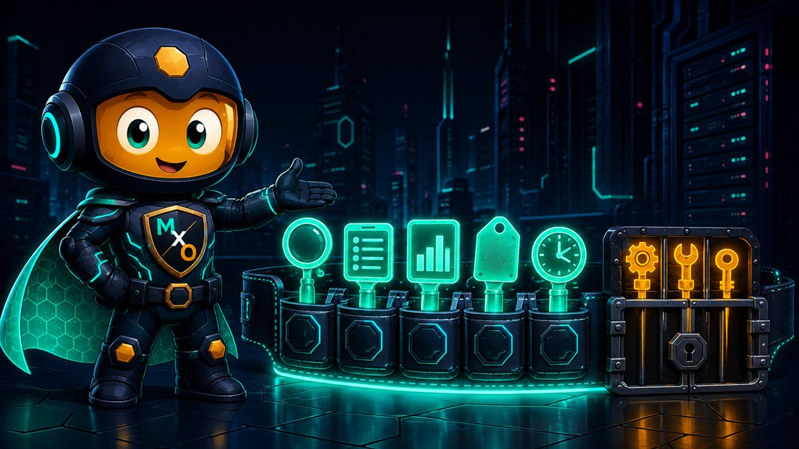
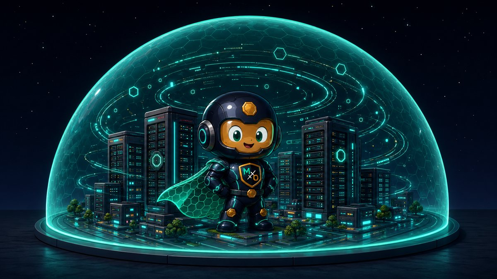

THE AUTOMATION
LAYER
Connect MaxOps to a desktop AI assistant and ask questions in plain language — without any of your cloud data leaving the machine it already lives on.
WHAT THIS
ACTUALLY IS
A bridge between your MaxOps and a desktop AI assistant. You ask a question in your own words; the assistant walks across the bridge, reads what I already know, and answers.
MaxOps speaks a shared protocol that desktop AI clients understand. Once it's connected, the assistant gains a set of things it may ask MaxOps — and nothing else. It cannot browse your account, invent a query, or reach past what's on the bridge.
So the AI gets access to my AWS account?
No — it gets access to me, and I already did the looking. It reads my findings, my inventory, my recommendations. Your AWS credentials never come near it.
Each of these maps onto something MaxOps already computed. The assistant is reading, phrasing and joining — not analysing your cloud itself.
WHAT IT'S
FOR
The dashboard is better than an assistant at showing you a hundred findings. The assistant is better at the questions that cut across them — the ones that would otherwise mean three filters, an export, and a spreadsheet.
Think of it as the difference between reading a report and asking the person who wrote it. Same facts. Much faster to the part you cared about.
It's also where the tag summaries earn their keep: "which team owns the most idle spend" is one question to an assistant and a genuine chore in any dashboard.

WHAT IT CAN
REACH
Thirteen of the sixteen only read. That ratio is the design: an assistant should be overwhelmingly a reader of your account's history.
maxops://resource-types maxops://dashboard/summary maxops://inventory/{type} maxops://snoozes/{type} maxops://rightsizer/{type}
Always read-only. An assistant can pull one up without being asked to run anything.
FIVE STANDING
VIEWS
Tools are verbs — "go and fetch". These are nouns. Your dashboard summary, your inventory for a resource type, everything currently snoozed. An assistant can just look at them.
The practical difference is that a good assistant will pull up the dashboard summary at the start of a conversation without being told to, and reason from there. It's the equivalent of glancing at the room before answering a question about it.
Every one is read-only, with no exceptions and no gate — because looking at a view can never change anything.

IT ALL STAYS
HERE
The bridge runs to your own machine. By default I answer on localhost — the assistant is talking to software running beside it, not to anything of mine on the internet.
This is the whole reason the integration is shaped this way. Your inventory, your cost figures, your findings and the reasons you snoozed things are exactly the sort of thing that shouldn't be uploaded anywhere to be useful.
But the assistant itself is a cloud service. Doesn't my data reach it that way?
A fair question, and worth being precise about. Whatever the assistant puts in its answer travels wherever that assistant normally sends conversations. What this bridge guarantees is narrower and still worth having: MaxOps itself never ships your account anywhere, and you choose which questions get asked in the first place.
READ-ONLY
OUT OF THE BOX
Connect me today and the assistant can read everything and change nothing. Not "shouldn't" — can't. The three write tools refuse outright.
Ask an assistant to snooze something before you've opened the gate and it gets a flat refusal explaining exactly which switch is missing:
That message is deliberately specific. A vague failure would send an assistant off inventing workarounds; a precise one tells it — and you — that this is a deliberate configuration, not a bug to route around.
OPENING THE
GATE
One setting where the bridge is launched opens all three at once:
Every snooze made this way lands in the same ledger as one made by hand — who, when, before and after. An assistant doesn't get an anonymous back door.
WHY RUNNING A CHECK
COUNTS AS WRITING
Running a check only reads AWS. Why is it locked behind the write switch?
Because "changes nothing in AWS" and "changes nothing at all" are different promises, and only the second one is worth making.
Running a check is read-only against your cloud — that guarantee from Issue №3 holds absolutely. But it is not free and not invisible:
So it sits behind the same switch. The gate isn't only about destruction; it's about who gets to initiate work in your account.
{
"mcpServers": {
"maxops": {
"command": "…/maxops-mcp",
"env": {
"MAXOPS_API_BASE_URL":
"http://localhost:8000/api/v1",
"MAXOPS_MCP_WRITE_ENABLED":
"false"
}
}
}
}
Start the MaxOps backend first — the bridge needs something on the other side.
CONNECTING
THE BRIDGE
false until you have a reason. You can always turn it on later.That last part matters more than it reads. The bridge exists only while your assistant is using it, and only your assistant can reach it.
Requests give up after 30 seconds by default, so a slow query fails cleanly instead of leaving a conversation hanging.
$ maxops-mcp-client \
--api-base-url http://localhost:8000/api/v1 \
smoke --resource-type ec2 --limit 3
If this returns three EC2 rows, the bridge works and any remaining problem is in your assistant's configuration.
TESTING IT
ALONE
Two things can be wrong: the bridge, or the assistant's configuration. Test the bridge by itself and you instantly know which half to fix.
A bundled test client speaks to the bridge exactly as an assistant would, from a terminal. It takes the same settings, so if it works here and not there, the configuration is the difference.
SIXTEEN TOOLS.
THIRTEEN OF THEM
ONLY READ.
A bridge to your own machine, a conversation instead of three filters and an export, and a switch you have to reach for deliberately before anything can change.